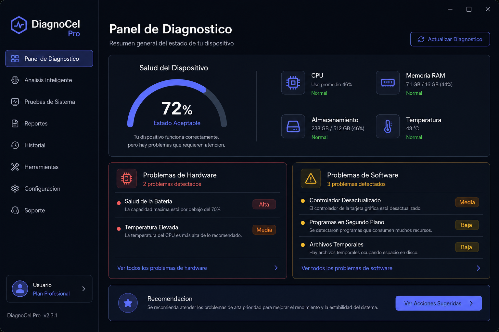
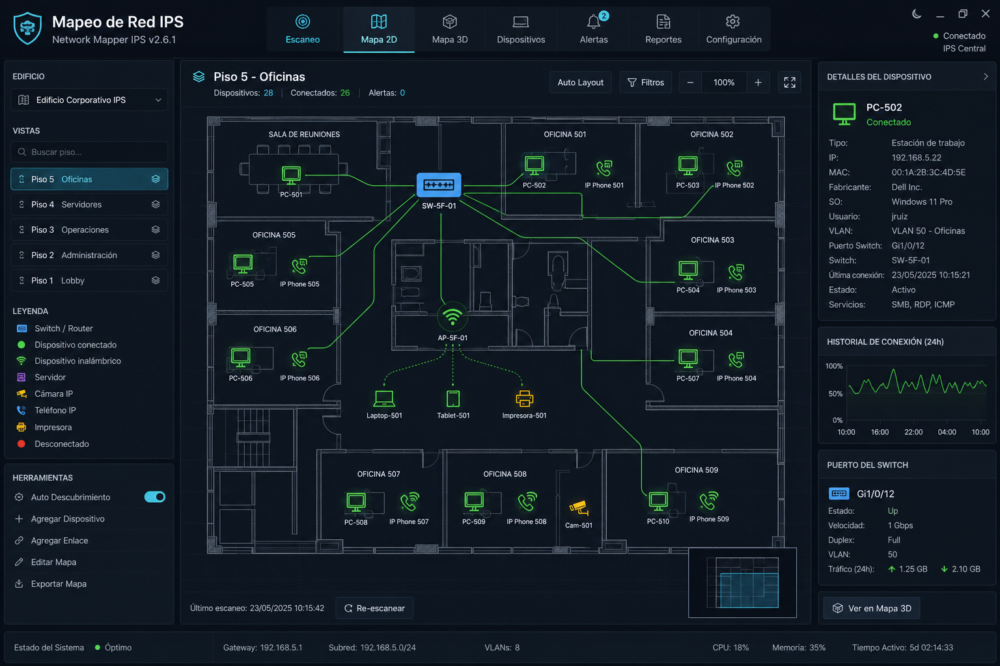
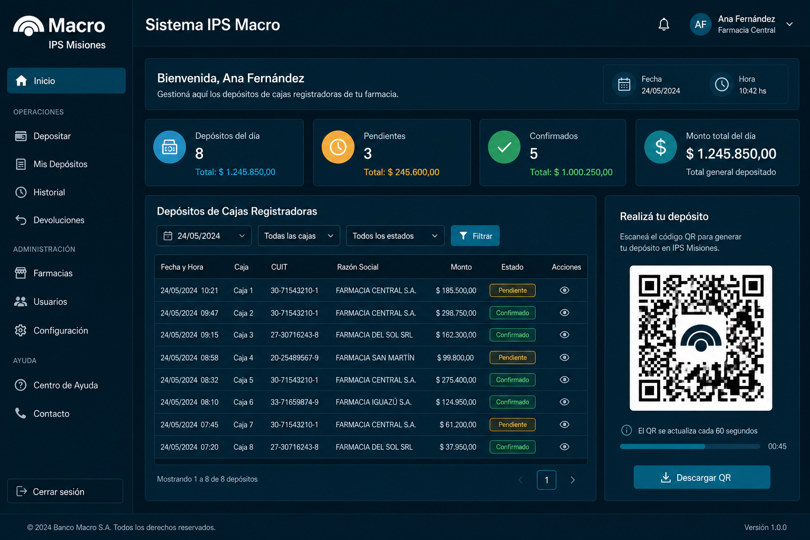
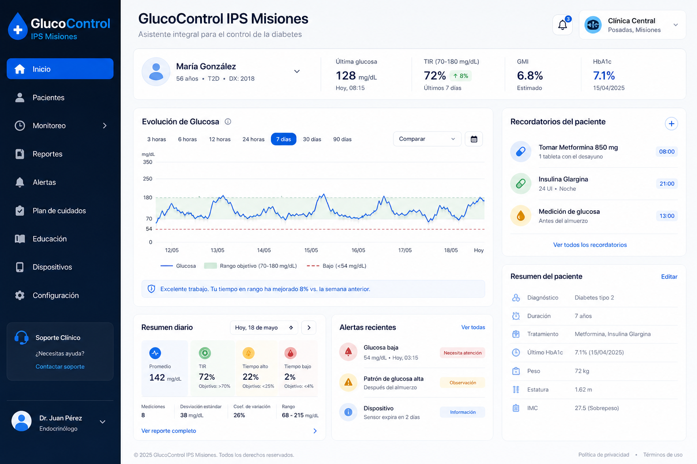
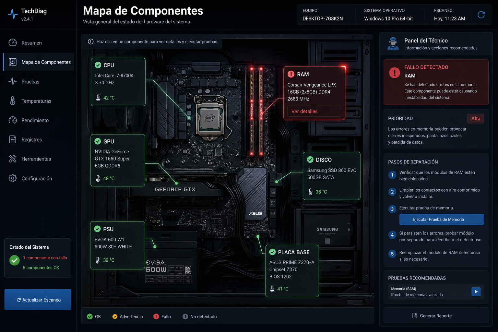
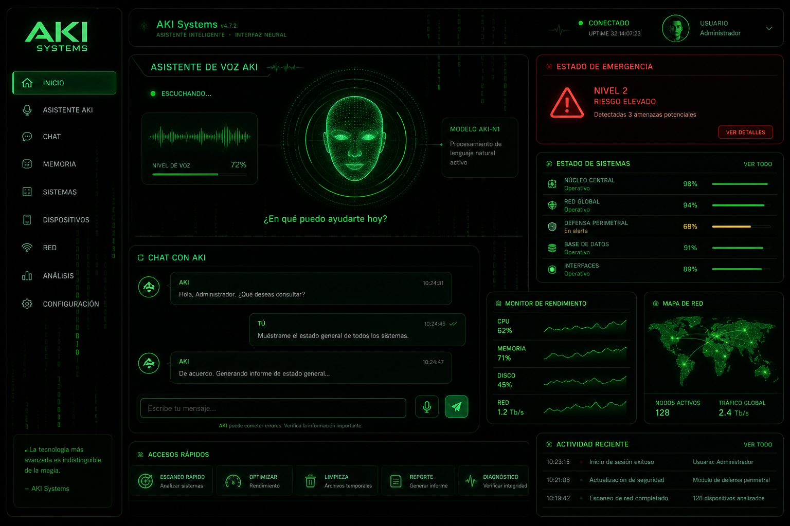
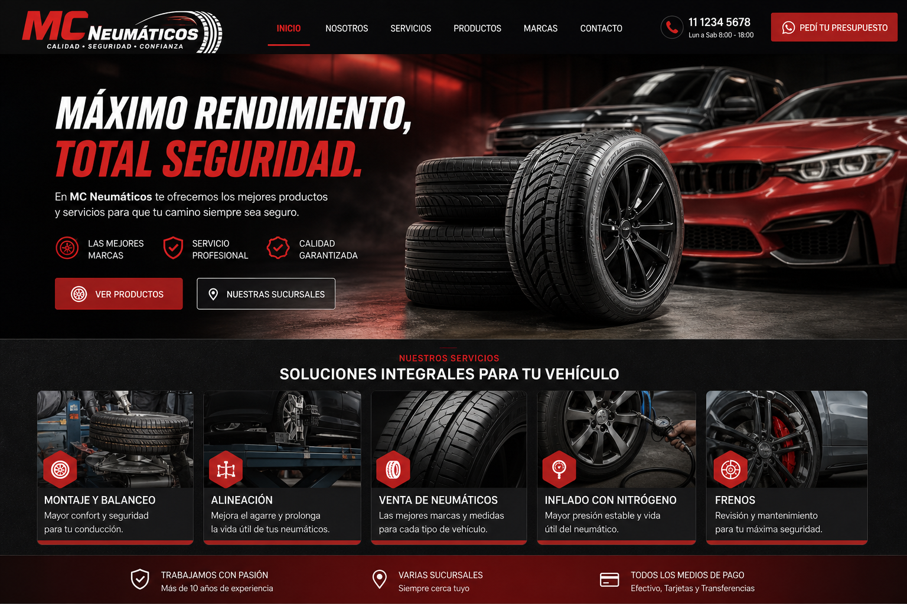

Nuevo 2026DiagnoCel Pro
Software de escritorio para diagnóstico de celulares Android e iPhone: síntomas, ADB, hardware vs software, Recovery automático.
$ whoami
Vazquez Valentin | Full Stack + Soporte Técnico IPSM
$ cat perfil.txt
Python · TypeScript · React · Electron Redes · Mikrotik · Cableado Sistemas IPS Misiones
Desarrollo software real para producción: diagnóstico de hardware, mapeo de redes, recaudación bancaria IPS–Banco Macro, salud digital y automatización. En el IPSM trabajo como desarrollador técnico: soporte, cableado estructurado, redes e infraestructura.
Repos públicos
Exp. profesional
Web + Desktop + Redes
Desarrollador Técnico · Soporte · Redes y Cableado
Rol integral en informática institucional: desarrollo de sistemas internos, soporte a usuarios, infraestructura de red, cableado estructurado y herramientas de monitoreo para el edificio IPS.
Full Stack Developer
Diagnóstico móvil (DiagnoCel), sitios comerciales (MC Neumáticos), asistentes con IA (AKI Systems), sistemas médicos y automatización.
Técnico Superior en Programación · Analista de Sistemas
Especialización práctica en ciberseguridad (Kali Linux), visión por computadora, APIs REST y despliegues en Vercel.
Selección de repos reales en GitHub — documentados, con capturas y enlaces.

Nuevo 2026Software de escritorio para diagnóstico de celulares Android e iPhone: síntomas, ADB, hardware vs software, Recovery automático.

IPSMEscaneo de red, planos 2D/3D del edificio IPS (5 pisos), oficinas, conflictos IP/MAC y exportación de inventario.

IPSM · Banco MacroCierre de caja de farmacias, archivo DeudaPub, importación DPPPdat, conciliación y comprobantes con QR.

Live demoAsistente inteligente de diabetes para IPS Misiones Posadas. Seguimiento de glucosa y acompañamiento digital.

Pendrive diagnósticoDiagnóstico de hardware por pendrive: mapa visual, luces de falla y panel del técnico con pasos de reparación.

Live demoAsistente con voz, monitoreo de estado y protocolos de emergencia. Evolución del stack AKI en producción web.

ComercialPlataforma web para negocio de neumáticos: servicios, presencia digital y diseño orientado a conversión.
Sistema en Python para el doctor Falkoski: flujo de docking molecular y herramientas de apoyo científico.
Bridge networking, compartición WiFi y repetidor con autenticación — alineado al trabajo de redes en IPSM.
Ver Documentación →Autenticación biométrica con OpenCV y login multi-factor para sistemas de seguridad.
Ver Documentación →Digitalización de recetas médicas con Tesseract OCR y extracción estructurada de datos.
Ver Documentación →Visión en tiempo real con YOLOv3, alertas y análisis de comportamiento.
Ver Documentación →Más proyectos en GitHub: Scrum IPS, Sudoku, stock, chatbots AKI, asistentes y más.
Ver todos los repositorios¿Necesitás un sistema, soporte de red o un producto digital? Escribime y lo vemos.
Posadas, Misiones, Argentina